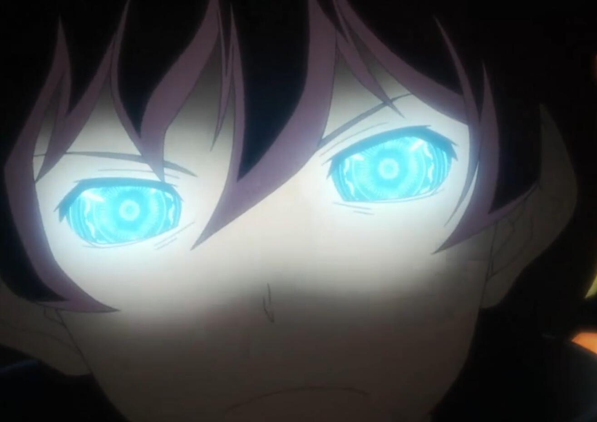

神之義眼
本質：魔幻本質
價格：A+4800
描述：由上層眼科技師里加·艾爾·梅努休特所賦予，必須以摯愛之人的視力為代價換來的高級瞳術，與其說是瞳術，倒不如說是極其精密的儀器，神之義眼會賦予擁有者極其優秀的視力與動態視力，能識破高級別的幻術，視線穿透，生物的氣場、眼球最后看到的瞬間，讀取血界眷屬的名稱和支配他人的視野實現視野互換，但是過度集中使用會導致眼睛發熱甚至冒煙。
前提：兌換神之義眼者必須擁有“摯愛之人”（由ST裁定）并且其必須位于兌換者的輪回小隊中，“摯愛之人”可以是友方輪回者，亦可以是人造生命體，但無論如何神之義眼擁有者必須對其懷有強烈而真摯的情感，甚至愿意舍棄生命保全對方。
特殊：由于你與“神”立下了契約，從此神之義眼與“你”永久綁定，這意味著該瞳術無法被任何手段永久性剝奪，但你也從此無法再使用洗點系統。
特性：破幻之瞳，強制視野共享，鎖定，過度使用，等價交換
破幻之瞳：標準動作開啟瞳術，每維持該瞳術一輪，你便需要支付3點意志力。
瞳術開啟期間，你獲得等同于你敏感視覺范圍的S級魔幻本質偵測能力，能識破S級的幻象來源的效果，你可以透視敏感范圍內的所有物質（包括但不限于力場阻礙、云霧術、結界甚至是異空間），這意味著你與你敏感范圍內的所有目標之間永久存在單方面的視覺線，同時你可以得知所有位于你敏感范圍內的目標的真實姓名。
強制視野共享：瞳術開啟期間，你能夠以一個整輪動作將你的視野與敏感范圍內的任意個單位共享，效果等同于精神力技能中的“心靈鏈接”，但僅限于視覺上的共享。之后你必須每輪支付一個迅捷動作維持這項能力，若沒有支付迅捷動作進行維持，則立即結束該效果。
鎖定：瞳術開啟期間，只要你曾經親眼見過一個單位（包括物品），你便可以每輪消耗一個整輪動作并額外支付3點意志力進行一次感知+洞察（專業：偵察）的延長檢定，當成功數累計至100個，你便可以以一個標準動作維持，無視空間上的限制，立刻感知到對方的具體位置及以對方為中心，半徑等同于你的感知*1米的范圍的情況，如同你親眼所見一般，除非他與你不在同一個星球上，這是A級的時間來源的能力。
過度使用：你每天能夠維持神之義眼的輪數最多為你耐力上的附加成功數*1輪，之后每超出1輪，你便會受到不可豁免的7點惡性傷害，當因此累計受到的惡性傷害超過你耐力上的附加成功數*2點，你會暫時失明，在視覺效果上體現為你的神之義眼如同玻璃般出現一道道裂痕，并且開始冒煙，最后徹底破碎。在實際效果上體現為你成為一個盲人，并且無法使用視覺對周邊環境進行偵測與感知，且會失去與其他目標之間的視覺線，同時其所有與視覺相關的能力（包括但不限于瞳術、瞄準能力、法則洞察等）全數失效，亦無法享受任何與視覺相關能力帶來的好處，持續24小時。
等價交換：兌換者的“摯愛之人”永久性失去了視覺，并且永遠無法使用視覺對周邊環境進行偵測與感知，這意味他/她/它會永久失去與其他目標之間的視覺線，同時其所有與視覺相關的能力，亦無法享受任何與視覺相關能力帶來的好處（例如神之義眼的視野共享能力），該效果無法被任何手段解除。
